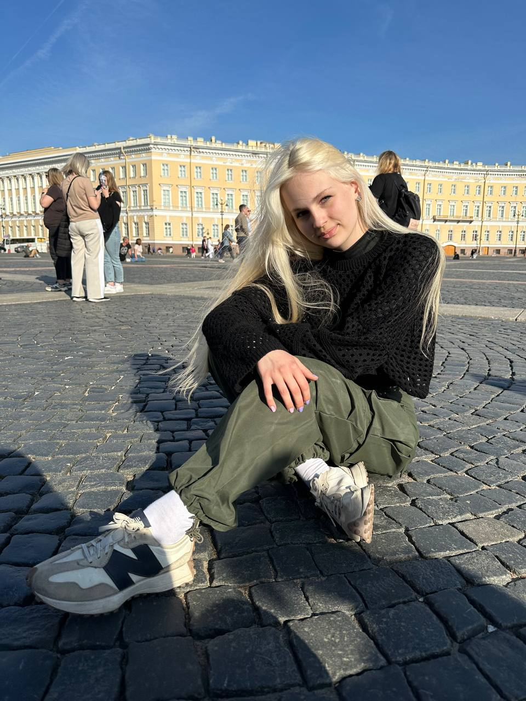

Елизавета Чапурен
Студентка ВГУ Факультета Компьютерных наук
Привет! Вы перешли по ссылке и попали на эту страничку, здесь я расскажу немного о себе
Немного обо мне
Я родилась в Воронежской области. С детства занимаюсь различными видами спорта: лёгкая атлетика, волейбол, а также танцами. Училась в музыкальной школе.
После окончания школы решила пойти в IT-сферу — пока только учусь. Надеюсь, у меня всё получится, и через некоторое время это портфолио будет дополняться различной информацией, но пока так!
Оставлю и здесь свою фотографию, чтобы не забыли, как выгляжу!
